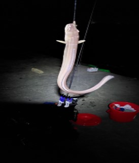
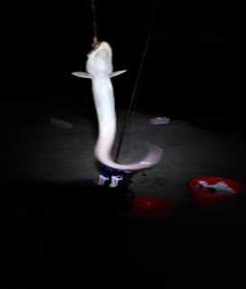
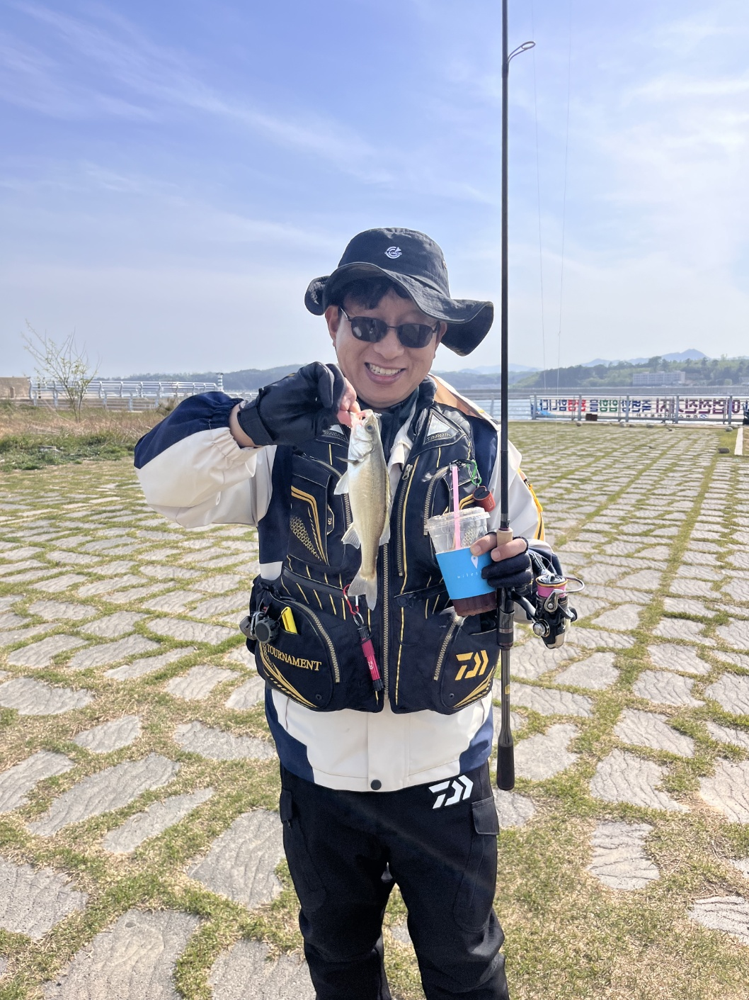
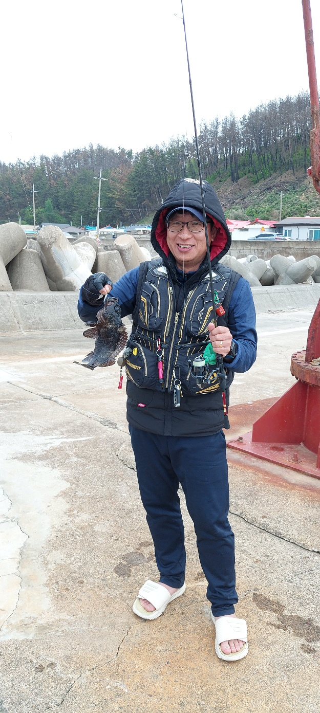
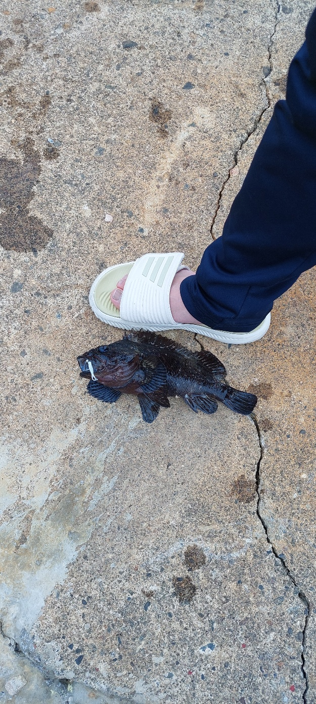
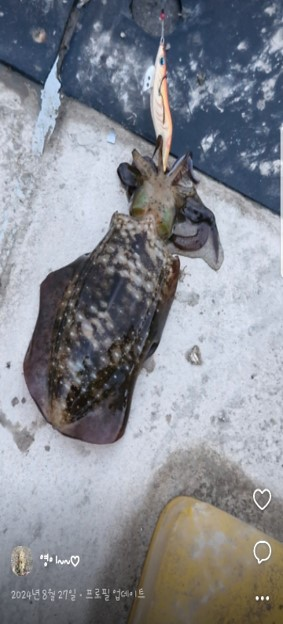
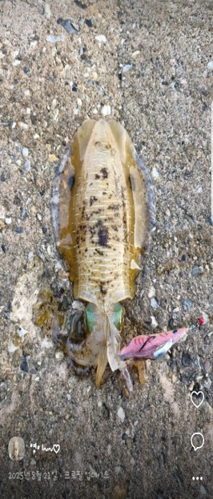

화면을 클릭하면 닫힙니다
방향키(→)나 스와이프를 통해 넘겨보세요

몽돌 해변에 릴대를 세워두고 던질낚시를 즐깁니다.
파도가 밀려오는 해안선을 바라보며 입질을 기다리는 시간이 즐겁습니다.
이 날의 조과: 전갱이 한 마리 — 흐린 하늘 아래 첫 입질


가로등 불빛 아래, 방파제에서 늦은 밤까지 기다린 끝에 올라온 장어.
어둠 속 조용한 파도 소리와 릴 감는 소리만 남는 순간입니다.

바다뿐 아니라 저수지나 담수 포인트에서도 낚싯대를 드리웁니다.
따뜻한 봄날, 커피 한 잔과 함께하는 출조도 큰 즐거움입니다.
다이와 토너먼트 베스트로 소품 정리 완료!


테트라포드 사이사이를 노리는 볼락·쏨뱅이 낚시.
흐린 날씨에도 방한복 하나 걸치고 나가면 어느새 짜릿한 입질이 옵니다.


'에기'를 던지고 감아오며 묵직한 입질을 기다립니다.
특유의 손맛과 눈앞에서 보는 다채로운 체색 변화가 매력적입니다.
✔ 바다든 저수지든, 자연 속에서 조용히 집중하는 시간
✔ 입질 한 번을 위해 몇 시간을 기다리는 설렘
✔ 매번 다른 결과를 손에 쥐는 즐거움